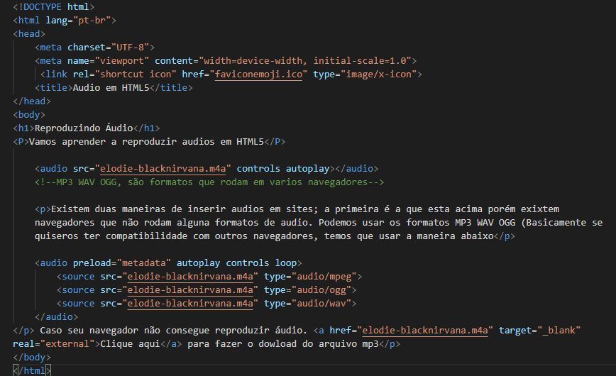

Vamos aprender a reproduzir audios em HTML5
Existem duas maneiras de inserir audios em sites; a primeira é a que esta acima porém exixtem navegadores que não rodam alguna formatos de audio. Podemos usar os formatos MP3 WAV OGG (Basicamente se quiseros ter compatibilidade com outros navegadores, temos que usar a maneira abaixo
Caso seu navegador não consegue reproduzir áudio. Clique aqui para fazer o dowload do arquivo mp3Veja abaixo o código utilizado para inserir os dois tipos de áudio no site
